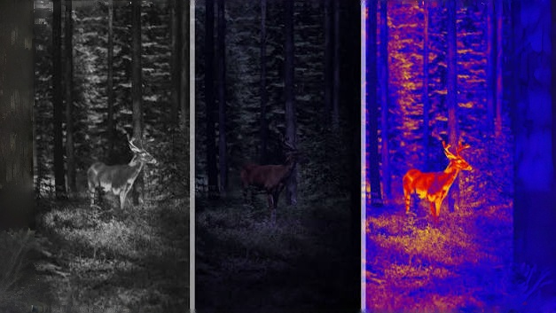

Part 1
The Concept & Components
1. The Vision Behind Augmented Senses
Imagine seeing the world through the eyes of a pit viper, sensing the heat radiating from objects, or experiencing the vibrant, hidden patterns only visible in ultraviolet light, much like a bee. This project details an invention that transforms the Meta Quest 3 into a device capable of precisely that: augmenting human perception with simulated animal senses using external thermal and UV cameras.
This guide provides a step-by-step blueprint, blending theoretical explanations with practical implementation details, to develop a sophisticated mixed reality application. You will learn how to bridge external hardware with the virtual world, process specialized sensor data in real-time using custom shaders, and control the experience with an intuitive in-world user interface.
2. The Toolkit: Hardware You'll Need
Meta Quest 3 Headset
Chosen for its powerful Snapdragon XR2 Gen 2 processor, high-resolution color passthrough, and mature developer ecosystem.
~1,835 AED
Thermal Camera Module
The Lepton 3.5 is selected for its high resolution (160x120), radiometric accuracy, and compact form factor.
~605 AED
Lepton Breakout Board
Provides a stable USB interface and handles the complex power requirements of the Lepton module, simplifying hardware integration.
~245 AED

UV Camera Module
Must be UVC-compliant (USB Video Class) for driverless operation on the Android-based Quest OS.
~550 AED
3D Printer
Essential for creating a custom, lightweight rig to mount the cameras and USB hub securely to the Quest 3 headset.
~1,100 AED
Powered USB-C Hub
A powered hub is non-negotiable to prevent battery drain and ensure stable power for consistent data transfer.
~275 AED
Visualizing the Hardware Rig
This sketch illustrates how the external components are assembled onto a 3D-printed mount attached to the Quest 3 headset.
Part 2
The Implementation
3. Designing the 3D-Printed Mount
Key Design Principles
A successful mount is lightweight, stable, and balanced. Use CAD software like Fusion 360, Blender, or even beginner-friendly Tinkercad to model it.
-
Stability & Rigidity
The mount must be completely rigid. Any wobble or vibration will ruin the mixed reality alignment and cause motion sickness.
-
Ventilation
Ensure the design doesn't block the Quest 3's built-in cooling vents, especially the main exhaust fan on the top front.
-
Cable Management
Integrate small clips or channels into the print to route USB cables neatly and securely, preventing them from snagging.
4. Project Architecture: An Interactive Overview
This mind map illustrates the project's core components. Click on any node to jump to the relevant section for more details.
The Software Data Pipeline
This flowchart shows the journey of data from the physical camera sensor to the final image you see in the headset.
5. The Build Process: An Exhaustive Guide
Part A: Foundation & Native Code
Phase 1: Software & Hardware Setup
1. Install Unity Hub & Editor
Download Unity Hub and install a stable LTS version like 2022.3.x LTS. During installation, you must select 'Android Build Support'. This packages the necessary Android SDK, NDK, and OpenJDK tools.
2. Enable Developer Mode
Register as a developer on the Meta Developer Center. Then, in the Meta Quest mobile app, go to 'Headset Settings' > 'Developer Mode', and toggle it on.
3. Connect & Authorize Headset
Use a high-quality USB-C cable. Once connected, put on the headset and accept the 'Allow USB debugging' prompt, checking 'Always allow from this computer'.
4. Verify Connection with ADB
Open a terminal and type adb devices. A successful connection shows your device's serial number. If it says unauthorized, re-accept the prompt inside the headset.
Part B: Unity & Deployment
Phase 3: Unity Project Integration
1. Create a 3D (URP) Project: Using the Universal Render Pipeline is essential for performance and gives you access to Shader Graph.
2. Import SDKs & Plugin
Use the Package Manager to install 'Meta XR Core' and 'Interaction'. Then, create a folder at Assets/Plugins/Android and drag your .aar file into it.
3. Configure with Project Setup Tool
Run Meta XR > Tools > Project Setup Tool. Clicking 'Fix All' will configure dozens of settings, including graphics APIs and linear color space.
4. Build the Passthrough Scene
Drag the `OVRCameraRig` prefab into your scene. On its `OVRManager`, set `Passthrough Support` to 'Supported' and add an `OVRPassthroughLayer` component. Create a 3D Quad to act as the screen for your external camera feed.
The Performance Imperative: Why GPU Pointers Matter
This diagram contrasts the slow, traditional method of copying video frames with the high-speed "Expert Method" required for VR.
The SLOW Way: CPU Data Copy
The FAST Way: GPU Pointer
6. The Technical Deep Dive: Core Theory & Logic
The Core Bridge: Native Plugin & C# Wrapper
This two-part system is the project's most critical component. The native Android plugin does the heavy lifting, and the C# script provides a simple interface for Unity.
C# Wrapper (`ExternalCameraManager.cs`)
This Unity script calls into the Java plugin without needing to know the complexities of the Android OS.
// Reference to the Java plugin class
private const string PluginName = "com.yourcompany.questxsa.CameraPlugin";
private AndroidJavaObject cameraPlugin;
void Start() {
// Instantiate the Java class
cameraPlugin = new AndroidJavaObject(PluginName);
// Call a method to initialize the camera system
cameraPlugin.Call("initialize", /* Android Context */);
}
public IntPtr GetThermalTexturePtr() {
if (cameraPlugin != null) {
return (IntPtr)cameraPlugin.Call<long>("getThermalTextureId");
}
return IntPtr.Zero;
}
// Usage:
// Texture2D thermalTex = Texture2D.CreateExternalTexture(
// width, height, format, false, false, GetThermalTexturePtr());
The Expert Method (GPU Texture Pointers)
The NDK layer decodes the video stream directly into a native OpenGL texture on the GPU. The plugin passes its integer ID (the "pointer") back to Unity. Unity then uses `Texture2D.CreateExternalTexture` to reference this data directly, eliminating slow CPU-to-GPU memory copies and preserving performance.
VR Performance Comparison
Inefficient (CPU Copy)
~25 FPSExpert (GPU Pointer)
72+ FPSThe Art of Illusion: Custom Shader Implementation
Thermal Vision
The raw thermal data is grayscale. A Gradient (LUT - Look-Up Table) texture maps each intensity value to a color, creating the classic "predator" look.
Key Nodes: `Sample Texture 2D` (Input) -> `Split` (R channel) -> `Sample Texture 2D` (Gradient LUT)
UV Vision
Applies high contrast and a false-color glow to reveal fluorescent patterns invisible to the human eye.
Key Nodes: `Sample Texture 2D` -> `Power` (Contrast) -> `Multiply` (Color) -> `Emission`
Acuity Vision
Uses a 3x3 convolution kernel (a simple matrix) to sharpen the image by enhancing the contrast of edge pixels.
Logic: Sample center pixel and 8 neighbors. Multiply by kernel weights. Sum results. Best done in HLSL for performance.
Visualizing the Shader Logic
These diagrams represent the data flow inside the shaders, similar to a Unity Shader Graph layout.
Thermal Shader Flow
UV Shader Flow
Shaders in Action: Example Outputs
Thermal Vision Output
This is how the thermal camera data is rendered. Warm objects, like a human hand or a hot coffee mug, appear bright yellow/white, while cooler background elements are shown in deep blues and purples.
UV Vision Output

Here, the UV camera captures patterns invisible to the naked eye. The shader enhances this data, making UV-reflective surfaces (like the nectar guides on a flower) glow with a vibrant, otherworldly light.
The World Through Their Eyes: Animal Senses
Thermal Visionaries
-
Pit Vipers
Species like rattlesnakes use pit organs to create a thermal "image" for hunting warm-blooded prey in total darkness.
-
Vampire Bats
Their nose has heat-sensitive nerves that help them locate the best spot to bite by finding blood vessels close to the skin.
-
Bed Bugs
They are attracted to the heat and carbon dioxide we emit, allowing them to find their hosts in the dark.
-
Boas & Pythons
Like vipers, they have heat-sensing pits, though structured differently, arranged along their jaws to detect prey.
-
Fire Beetles
These insects can detect the infrared radiation from forest fires miles away, flying towards the blaze to lay eggs in the cooling wood.
Ultraviolet Observers
-
Bees & Butterflies
Many flowers have "nectar guides," complex patterns only visible in UV light that act like a landing strip to guide insects to nectar.
-
Birds (e.g., Kestrels)
Raptors can track the urine trails of small rodents, which reflect UV light, allowing them to spot prey from high above.
-
Reindeer
In the Arctic, UV vision helps them find lichens (food) and spot predators like wolves, whose fur absorbs UV light against the reflective snow.
-
Scorpions
Their bodies fluoresce under UV light. It's thought they use this to sense ambient moonlight, helping them decide when it's dark enough to hunt safely.
-
Many Fish
Species like salmon and trout use UV vision to see plankton, which appear as dark specks against the scattered UV light of the water.
The Performance Mandate: VR Optimization
A consistent 72+ FPS is non-negotiable for a comfortable VR experience. Layering optimizations is essential.
Path to 72 FPS:
7. Common Issues & Solutions
Camera Not Detected
Cause: USB permissions not granted, faulty cable/hub, or incorrect Vendor/Product ID in the native plugin.
Solution: Re-plug the headset and re-accept the USB debugging prompt. Check that your USB-C hub is powered. Use `adb logcat` to check for USB device attachment logs and verify the VID and PID your code is looking for match the device.
App Crashes on Start
Cause: Most often a Java Native Interface (JNI) signature mismatch between C# and Java methods, or an unhandled exception in native code (e.g., camera not found).
Solution: Use `adb logcat` to read logs at the moment of the crash. Look for "JNI DETECTED ERROR" or "FATAL EXCEPTION". Ensure C# method signatures perfectly match the Java function names and parameters.
Black Screen Instead of Camera Feed
Cause: The texture pointer from the plugin is invalid (0 or -1), the shader isn't sampling the external texture correctly, or the native camera stream failed to start.
Solution: Log the texture pointer value in C# to ensure it's valid. Use Unity's Frame Debugger to inspect your display Quad and see if the texture is bound. Add logs in your Android plugin to confirm the camera stream initializes successfully.
Poor Performance / Stuttering
Cause: Most likely not using the GPU texture pointer method. Shaders may be too complex, or Fixed Foveated Rendering (FFR) is disabled.
Solution: Ensure your entire pipeline uses the native texture pointer method. Enable FFR (High) in the Meta XR settings. Use the Unity Profiler to identify and optimize costly shader calculations or C# script logic.
8. User Interface & Interaction Design
In-World Control Panel
A user-friendly interface is key. A world-space canvas, attached to the user's controller or floating in front of them, provides easy access to switch vision modes and adjust settings without breaking immersion.
-
Mode Selection
Clear buttons allow the user to instantly switch between Normal (Passthrough), Thermal, and UV vision modes.
-
Intensity Slider
A slider allows the user to control the opacity of the thermal/UV overlay, blending it with the real world for comfort and context.
-
Interaction Model
Using the Meta XR Interaction SDK, a ray interactor from the controller allows the user to simply point and click the trigger to operate the UI.
9. Conclusion & Future Horizons
Why Build This? The Core Purpose
This project transcends a simple tech demo; it's an exploration into the future of human-computer interaction and perception. By integrating external sensors with mixed reality, we unlock the ability to visualize and interact with data streams that are normally invisible. This technology serves as a powerful platform for education, professional training, scientific research, and even artistic expression, fundamentally changing how we perceive and understand the world around us.
Real-World Scenarios & Future Horizons
Industrial & Safety Inspections
An HVAC technician uses thermal vision to instantly see heat leaks in insulation or faulty electrical connections in a complex panel, overlaying the heat map directly onto their real-world view. This allows for faster, more accurate diagnostics and preventative maintenance.
Scientific & Environmental Field Research
A biologist studying pollination uses UV vision to see the "nectar guide" patterns on flowers exactly as a bee would, gaining unprecedented insight into animal behavior. A wildlife researcher could use thermal vision at night to conduct population counts of nocturnal animals non-invasively.
Next Step: Sensor Fusion (MSX)
A compelling next step is to implement Multi-Spectral Dynamic Imaging (MSX). This involves running an edge-detection algorithm on the Quest's RGB camera and overlaying the outlines onto the low-resolution thermal image, adding crucial definition and context.
Future: Machine Learning Integration
The live camera feeds could be processed by an on-device machine learning model. This could enable real-time object recognition (e.g., "Hot Pipe Detected") or even gesture recognition, creating a truly futuristic and intelligent sensory augmentation tool.
10. Additional Resources & References
- Official Meta Quest Developer Docs for Unity
- Unity Manual: Native Plugins for Android
- Android Developer Guide: USB Host Mode
- Android Debug Bridge (adb) Command Reference
- Teledyne FLIR Lepton OEM Module Documentation
- Unity Manual: Introduction to Shader Graph
- Meta Docs: Fixed Foveated Rendering in Unity
- Video Guide: Getting Started with Meta XR in Unity
- libuvc for Android (Helpful UVC Library)
- The Book of Shaders (Advanced Shader Guide)